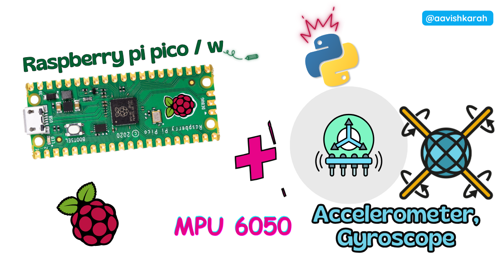
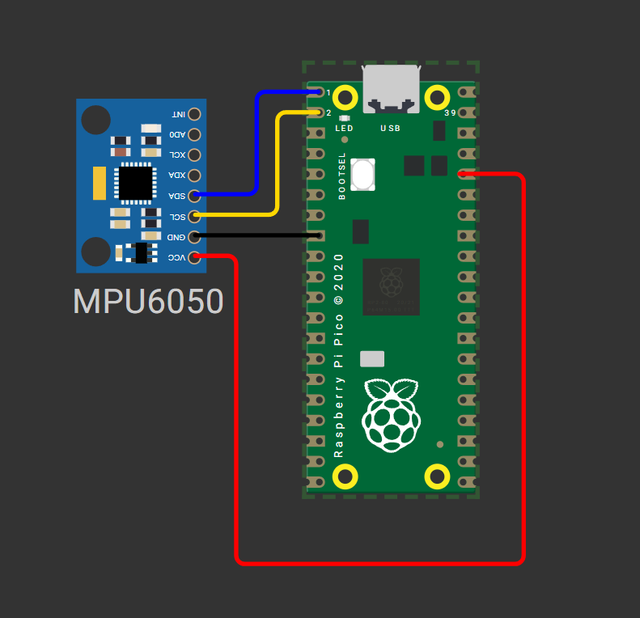

How to Interface MPU6050 IMU Sensor with Raspberry Pi Pico Using MicroPython (Step-by-Step Guide)

Table of Contents
Abstract
The MPU6050 is a versatile 6-DoF (Degrees of Freedom) Inertial Measurement Unit (IMU) combining a 3-axis accelerometer and 3-axis gyroscope in a single compact module. In this tutorial, you will learn how to interface the MPU6050 sensor with a Raspberry Pi Pico microcontroller using MicroPython and the I2C communication protocol. By the end, you will be able to read real-time acceleration, angular velocity, and temperature data, understand I2C fundamentals, and integrate motion sensing into your embedded robotics and IoT projects.
Pre-Request
- OS: Windows / Linux / Mac / ChromeOS
- IDE: Thonny IDE (recommended) or VS Code with Pymakr extension
- Firmware: MicroPython firmware flashed on Raspberry Pi Pico / Pico 2 / Pico W / Pico 2W
- For step-by-step firmware installation, click here
Hardware Required
Raspberry Pi Pico, Arduino, sensors, and IoT maker essential Kits—perfectly matched for your learning.
- Raspberry Pi Pico / Pico 2 / Pico W / Pico 2W
- MPU6050 GY-521 Breakout Module
- Breadboard (optional, for prototyping)
- Micro USB Cable (for power and programming)
- Jumper wires (M-M or M-F)
- 3.3V logic level compatibility (MPU6050 supports 3.3V-5V VCC)
| Components | Purchase Link |
|---|---|
| Raspberry Pi Pico | link |
| Raspberry Pi Pico 2 | link |
| Raspberry Pi Pico W | link |
| Raspberry Pi Pico 2W | link |
| MPU6050 Module | link |
| BreadBoard | large : small |
| Connecting Wires | link |
| Micro USB Cable | link |
Don't own a hardware 
No worries,
Still you can learn using simulation.
check out simulation part  .
.
⚡ Understanding MPU6050 & I2C Communication
The MPU6050 is a MEMS (Micro-Electro-Mechanical System) sensor that integrates a 3-axis accelerometer and 3-axis gyroscope with an onboard Digital Motion Processor (DMP). Unlike analog sensors, the MPU6050 communicates digitally via the I2C (Inter-Integrated Circuit) protocol, making it ideal for microcontrollers like the Raspberry Pi Pico.
🔹 How I2C Controls MPU6050 Data Acquisition
| Parameter | Value | Description |
|---|---|---|
| I2C Address | 0x68 (default) / 0x69 (if AD0=HIGH) |
7-bit slave address for bus communication |
| Clock Speed | 100kHz (standard) / 400kHz (fast mode) | I2C bus frequency for data transfer |
| Data Format | 16-bit two's complement | Raw sensor readings for acceleration (±2g to ±16g) and rotation (±250°/s to ±2000°/s) |
| Update Rate | Configurable up to 8kHz | Sample rate for accelerometer/gyroscope data |
I2C Protocol Overview
- SCL (Serial Clock): Timing signal generated by the Pico to synchronize data transfer
- SDA (Serial Data): Bidirectional line for sending commands and receiving sensor data
- The Pico initiates communication, sends register addresses, and reads back measurement values
Sensor Axes Convention
+Y (forward)
↑
│
+X ←──┼──► -X (right-hand rule)
│
▼
-Y (backward)
+Z: Upward (perpendicular to board)
-Z: Downward (gravity direction when flat)
- Accelerometer: Measures linear acceleration (including gravity). When stationary, one axis will read ~1g (9.8 m/s²) due to Earth's gravity.
- Gyroscope: Measures angular velocity (rotation speed) around each axis in degrees per second (°/s).
🧷 Connection / Wiring Guide (Raspberry Pi Pico to MPU6050)
🔥 Pin Mapping Table
| MPU6050 Pin | Color (Typical) | Raspberry Pi Pico Pin | Description |
|---|---|---|---|
| VCC | Red | 3V3 (Pin 36) |
Power supply (3.3V recommended) |
| GND | Black | GND (Pin 38) |
Common ground reference |
| SCL | Blue | GP1 (I2C0 SCL, Pin 2) |
I2C clock signal |
| SDA | Green | GP0 (I2C0 SDA, Pin 1) |
I2C data signal |
| AD0 | - | GND (optional) |
Slave address select (LOW = 0x68) |
| INT | - | Not connected | Interrupt output (optional for advanced use) |
I2C Pin Flexibility on Raspberry Pi Pico
The RP2040 chip supports two hardware I2C controllers with multiple GPIO pin options:
| I2C Controller | SDA Pins | SCL Pins |
|---|---|---|
| I2C0 | GP0, GP4, GP8, GP12, GP16, GP20 | GP1, GP5, GP9, GP13, GP17, GP21 |
| I2C1 | GP2, GP6, GP10, MP14, GP18, GP26 | GP3, GP7, GP11, GP15, GP19, GP27 |
✅ Recommendation
Use I2C0 on GP0/GP1 for this tutorial. Update pin numbers in code if using alternative pins.

fig-Connection Diagram
⚠️ Power Note
While MPU6050 supports 5V input, use 3.3V from Pico to ensure logic-level compatibility and avoid potential I2C communication issues.
 Code
Code
Required Libraries: imu.py and vector3d.py
Before running the main script, upload these two library files to your Pico's /lib directory using Thonny IDE:
# Upload after imu.py and vector3d.py are in /lib folder
from imu import MPU6050
from time import sleep
from machine import Pin, I2C
# Initialize I2C0 on GP0 (SDA) and GP1 (SCL) at 400kHz
i2c = I2C(0, sda=Pin(0), scl=Pin(1), freq=400000)
# Create MPU6050 instance
imu = MPU6050(i2c)
print("MPU6050 initialized. Reading sensor data...")
print("ax(accel X)\tay(accel Y)\taz(accel Z)\tgx(gyro X)\tgy(gyro Y)\tgz(gyro Z)\tTemp(°C)")
print("-" * 100)
try:
while True:
# Read and round sensor values for clean output
ax = round(imu.accel.x, 2)
ay = round(imu.accel.y, 2)
az = round(imu.accel.z, 2)
gx = round(imu.gyro.x, 1)
gy = round(imu.gyro.y, 1)
gz = round(imu.gyro.z, 1)
temp = round(imu.temperature, 2)
# Print formatted data (carriage return for in-place update)
print(f"{ax}\t{ay}\t{az}\t{gx}\t{gy}\t{gz}\t{temp}", end="\r")
# Small delay to stabilize readings and reduce console spam
sleep(0.2)
except KeyboardInterrupt:
print("\n\nSensor reading stopped by user.")
# Optional: Deinitialize I2C if needed for power saving
# i2c.deinit()
# vector3d.py 3D vector class for use in inertial measurement unit drivers
# Authors Peter Hinch, Sebastian Plamauer
# V0.7 17th May 2017 pyb replaced with utime
# V0.6 18th June 2015
from utime import sleep_ms
from math import sqrt, degrees, acos, atan2
def default_wait():
'''
delay of 50 ms
'''
sleep_ms(50)
class Vector3d(object):
'''
Represents a vector in a 3D space using Cartesian coordinates.
Internally uses sensor relative coordinates.
Returns vehicle-relative x, y and z values.
'''
def __init__(self, transposition, scaling, update_function):
self._vector = [0, 0, 0]
self._ivector = [0, 0, 0]
self.cal = (0, 0, 0)
self.argcheck(transposition, "Transposition")
self.argcheck(scaling, "Scaling")
if set(transposition) != {0, 1, 2}:
raise ValueError('Transpose indices must be unique and in range 0-2')
self._scale = scaling
self._transpose = transposition
self.update = update_function
def argcheck(self, arg, name):
'''
checks if arguments are of correct length
'''
if len(arg) != 3 or not (type(arg) is list or type(arg) is tuple):
raise ValueError(name + ' must be a 3 element list or tuple')
def calibrate(self, stopfunc, waitfunc=default_wait):
'''
calibration routine, sets cal
'''
self.update()
maxvec = self._vector[:] # Initialise max and min lists with current values
minvec = self._vector[:]
while not stopfunc():
waitfunc()
self.update()
maxvec = list(map(max, maxvec, self._vector))
minvec = list(map(min, minvec, self._vector))
self.cal = tuple(map(lambda a, b: (a + b)/2, maxvec, minvec))
@property
def _calvector(self):
'''
Vector adjusted for calibration offsets
'''
return list(map(lambda val, offset: val - offset, self._vector, self.cal))
@property
def x(self): # Corrected, vehicle relative floating point values
self.update()
return self._calvector[self._transpose[0]] * self._scale[0]
@property
def y(self):
self.update()
return self._calvector[self._transpose[1]] * self._scale[1]
@property
def z(self):
self.update()
return self._calvector[self._transpose[2]] * self._scale[2]
@property
def xyz(self):
self.update()
return (self._calvector[self._transpose[0]] * self._scale[0],
self._calvector[self._transpose[1]] * self._scale[1],
self._calvector[self._transpose[2]] * self._scale[2])
@property
def magnitude(self):
x, y, z = self.xyz # All measurements must correspond to the same instant
return sqrt(x**2 + y**2 + z**2)
@property
def inclination(self):
x, y, z = self.xyz
return degrees(acos(z / sqrt(x**2 + y**2 + z**2)))
@property
def elevation(self):
return 90 - self.inclination
@property
def azimuth(self):
x, y, z = self.xyz
return degrees(atan2(y, x))
# Raw uncorrected integer values from sensor
@property
def ix(self):
return self._ivector[0]
@property
def iy(self):
return self._ivector[1]
@property
def iz(self):
return self._ivector[2]
@property
def ixyz(self):
return self._ivector
@property
def transpose(self):
return tuple(self._transpose)
@property
def scale(self):
return tuple(self._scale)
# imu.py MicroPython driver for the InvenSense inertial measurement units
# This is the base class
# Adapted from Sebastian Plamauer's MPU9150 driver:
# https://github.com/micropython-IMU/micropython-mpu9150.git
# Authors Peter Hinch, Sebastian Plamauer
# V0.2 17th May 2017 Platform independent: utime and machine replace pyb
from utime import sleep_ms
from machine import I2C
from vector3d import Vector3d
class MPUException(OSError):
"""
Exception for MPU devices
"""
pass
def bytes_toint(msb, lsb):
"""
Convert two bytes to signed integer (big endian)
for little endian reverse msb, lsb arguments
Can be used in an interrupt handler
"""
if not msb & 0x80:
return msb << 8 | lsb # +ve
return -(((msb ^ 255) << 8) | (lsb ^ 255) + 1)
class MPU6050(object):
"""
Module for InvenSense IMUs. Base class implements MPU6050 6DOF sensor, with
features common to MPU9150 and MPU9250 9DOF sensors.
"""
_I2Cerror = "I2C failure when communicating with IMU"
_mpu_addr = (104, 105) # addresses of MPU9150/MPU6050. There can be two devices
_chip_id = 104
def __init__(self, side_str, device_addr=None, transposition=(0, 1, 2), scaling=(1, 1, 1)):
self._accel = Vector3d(transposition, scaling, self._accel_callback)
self._gyro = Vector3d(transposition, scaling, self._gyro_callback)
self.buf1 = bytearray(1) # Pre-allocated buffers for reads: allows reads to
self.buf2 = bytearray(2) # be done in interrupt handlers
self.buf3 = bytearray(3)
self.buf6 = bytearray(6)
sleep_ms(200) # Ensure PSU and device have settled
if isinstance(side_str, str): # Non-pyb targets may use other than X or Y
self._mpu_i2c = I2C(side_str)
elif hasattr(side_str, "readfrom"): # Soft or hard I2C instance. See issue #3097
self._mpu_i2c = side_str
else:
raise ValueError("Invalid I2C instance")
if device_addr is None:
devices = set(self._mpu_i2c.scan())
mpus = devices.intersection(set(self._mpu_addr))
number_of_mpus = len(mpus)
if number_of_mpus == 0:
raise MPUException("No MPU's detected")
elif number_of_mpus == 1:
self.mpu_addr = mpus.pop()
else:
raise ValueError("Two MPU's detected: must specify a device address")
else:
if device_addr not in (0, 1):
raise ValueError("Device address must be 0 or 1")
self.mpu_addr = self._mpu_addr[device_addr]
self.chip_id # Test communication by reading chip_id: throws exception on error
# Can communicate with chip. Set it up.
self.wake() # wake it up
self.passthrough = True # Enable mag access from main I2C bus
self.accel_range = 0 # default to highest sensitivity
self.gyro_range = 0 # Likewise for gyro
# read from device
def _read(
self, buf, memaddr, addr
): # addr = I2C device address, memaddr = memory location within the I2C device
"""
Read bytes to pre-allocated buffer Caller traps OSError.
"""
self._mpu_i2c.readfrom_mem_into(addr, memaddr, buf)
# write to device
def _write(self, data, memaddr, addr):
"""
Perform a memory write. Caller should trap OSError.
"""
self.buf1[0] = data
self._mpu_i2c.writeto_mem(addr, memaddr, self.buf1)
# wake
def wake(self):
"""
Wakes the device.
"""
try:
self._write(0x01, 0x6B, self.mpu_addr) # Use best clock source
except OSError:
raise MPUException(self._I2Cerror)
return "awake"
# mode
def sleep(self):
"""
Sets the device to sleep mode.
"""
try:
self._write(0x40, 0x6B, self.mpu_addr)
except OSError:
raise MPUException(self._I2Cerror)
return "asleep"
# chip_id
@property
def chip_id(self):
"""
Returns Chip ID
"""
try:
self._read(self.buf1, 0x75, self.mpu_addr)
except OSError:
raise MPUException(self._I2Cerror)
chip_id = int(self.buf1[0])
if chip_id != self._chip_id:
print(f"Unexpected chip ID: 0x{chip_id:02x}. Possible clone chip?")
return chip_id
@property
def sensors(self):
"""
returns sensor objects accel, gyro
"""
return self._accel, self._gyro
# get temperature
@property
def temperature(self):
"""
Returns the temperature in degree C.
"""
try:
self._read(self.buf2, 0x41, self.mpu_addr)
except OSError:
raise MPUException(self._I2Cerror)
# MPU-6000 and MPU-6050 Register Map and Descriptions Revision 4.2:
return bytes_toint(self.buf2[0], self.buf2[1]) / 340 + 36.53
# passthrough
@property
def passthrough(self):
"""
Returns passthrough mode True or False
"""
try:
self._read(self.buf1, 0x37, self.mpu_addr)
return self.buf1[0] & 0x02 > 0
except OSError:
raise MPUException(self._I2Cerror)
@passthrough.setter
def passthrough(self, mode):
"""
Sets passthrough mode True or False
"""
if type(mode) is bool:
val = 2 if mode else 0
try:
self._write(val, 0x37, self.mpu_addr) # I think this is right.
self._write(0x00, 0x6A, self.mpu_addr)
except OSError:
raise MPUException(self._I2Cerror)
else:
raise ValueError("pass either True or False")
# sample rate. Not sure why you'd ever want to reduce this from the default.
@property
def sample_rate(self):
"""
Get sample rate as per Register Map document section 4.4
SAMPLE_RATE= Internal_Sample_Rate / (1 + rate)
default rate is zero i.e. sample at internal rate.
"""
try:
self._read(self.buf1, 0x19, self.mpu_addr)
return self.buf1[0]
except OSError:
raise MPUException(self._I2Cerror)
@sample_rate.setter
def sample_rate(self, rate):
"""
Set sample rate as per Register Map document section 4.4
"""
if rate < 0 or rate > 255:
raise ValueError("Rate must be in range 0-255")
try:
self._write(rate, 0x19, self.mpu_addr)
except OSError:
raise MPUException(self._I2Cerror)
# Low pass filters. Using the filter_range property of the MPU9250 is
# harmless but gyro_filter_range is preferred and offers an extra setting.
@property
def filter_range(self):
"""
Returns the gyro and temperature sensor low pass filter cutoff frequency
Pass: 0 1 2 3 4 5 6
Cutoff (Hz): 250 184 92 41 20 10 5
Sample rate (KHz): 8 1 1 1 1 1 1
"""
try:
self._read(self.buf1, 0x1A, self.mpu_addr)
res = self.buf1[0] & 7
except OSError:
raise MPUException(self._I2Cerror)
return res
@filter_range.setter
def filter_range(self, filt):
"""
Sets the gyro and temperature sensor low pass filter cutoff frequency
Pass: 0 1 2 3 4 5 6
Cutoff (Hz): 250 184 92 41 20 10 5
Sample rate (KHz): 8 1 1 1 1 1 1
"""
# set range
if filt in range(7):
try:
self._write(filt, 0x1A, self.mpu_addr)
except OSError:
raise MPUException(self._I2Cerror)
else:
raise ValueError("Filter coefficient must be between 0 and 6")
# accelerometer range
@property
def accel_range(self):
"""
Accelerometer range
Value: 0 1 2 3
for range +/-: 2 4 8 16 g
"""
try:
self._read(self.buf1, 0x1C, self.mpu_addr)
ari = self.buf1[0] // 8
except OSError:
raise MPUException(self._I2Cerror)
return ari
@accel_range.setter
def accel_range(self, accel_range):
"""
Set accelerometer range
Pass: 0 1 2 3
for range +/-: 2 4 8 16 g
"""
ar_bytes = (0x00, 0x08, 0x10, 0x18)
if accel_range in range(len(ar_bytes)):
try:
self._write(ar_bytes[accel_range], 0x1C, self.mpu_addr)
except OSError:
raise MPUException(self._I2Cerror)
else:
raise ValueError("accel_range can only be 0, 1, 2 or 3")
# gyroscope range
@property
def gyro_range(self):
"""
Gyroscope range
Value: 0 1 2 3
for range +/-: 250 500 1000 2000 degrees/second
"""
# set range
try:
self._read(self.buf1, 0x1B, self.mpu_addr)
gri = self.buf1[0] // 8
except OSError:
raise MPUException(self._I2Cerror)
return gri
@gyro_range.setter
def gyro_range(self, gyro_range):
"""
Set gyroscope range
Pass: 0 1 2 3
for range +/-: 250 500 1000 2000 degrees/second
"""
gr_bytes = (0x00, 0x08, 0x10, 0x18)
if gyro_range in range(len(gr_bytes)):
try:
self._write(
gr_bytes[gyro_range], 0x1B, self.mpu_addr
) # Sets fchoice = b11 which enables filter
except OSError:
raise MPUException(self._I2Cerror)
else:
raise ValueError("gyro_range can only be 0, 1, 2 or 3")
# Accelerometer
@property
def accel(self):
"""
Acceleremoter object
"""
return self._accel
def _accel_callback(self):
"""
Update accelerometer Vector3d object
"""
try:
self._read(self.buf6, 0x3B, self.mpu_addr)
except OSError:
raise MPUException(self._I2Cerror)
self._accel._ivector[0] = bytes_toint(self.buf6[0], self.buf6[1])
self._accel._ivector[1] = bytes_toint(self.buf6[2], self.buf6[3])
self._accel._ivector[2] = bytes_toint(self.buf6[4], self.buf6[5])
scale = (16384, 8192, 4096, 2048)
self._accel._vector[0] = self._accel._ivector[0] / scale[self.accel_range]
self._accel._vector[1] = self._accel._ivector[1] / scale[self.accel_range]
self._accel._vector[2] = self._accel._ivector[2] / scale[self.accel_range]
def get_accel_irq(self):
"""
For use in interrupt handlers. Sets self._accel._ivector[] to signed
unscaled integer accelerometer values
"""
self._read(self.buf6, 0x3B, self.mpu_addr)
self._accel._ivector[0] = bytes_toint(self.buf6[0], self.buf6[1])
self._accel._ivector[1] = bytes_toint(self.buf6[2], self.buf6[3])
self._accel._ivector[2] = bytes_toint(self.buf6[4], self.buf6[5])
# Gyro
@property
def gyro(self):
"""
Gyroscope object
"""
return self._gyro
def _gyro_callback(self):
"""
Update gyroscope Vector3d object
"""
try:
self._read(self.buf6, 0x43, self.mpu_addr)
except OSError:
raise MPUException(self._I2Cerror)
self._gyro._ivector[0] = bytes_toint(self.buf6[0], self.buf6[1])
self._gyro._ivector[1] = bytes_toint(self.buf6[2], self.buf6[3])
self._gyro._ivector[2] = bytes_toint(self.buf6[4], self.buf6[5])
scale = (131, 65.5, 32.8, 16.4)
self._gyro._vector[0] = self._gyro._ivector[0] / scale[self.gyro_range]
self._gyro._vector[1] = self._gyro._ivector[1] / scale[self.gyro_range]
self._gyro._vector[2] = self._gyro._ivector[2] / scale[self.gyro_range]
def get_gyro_irq(self):
"""
For use in interrupt handlers. Sets self._gyro._ivector[] to signed
unscaled integer gyro values. Error trapping disallowed.
"""
self._read(self.buf6, 0x43, self.mpu_addr)
self._gyro._ivector[0] = bytes_toint(self.buf6[0], self.buf6[1])
self._gyro._ivector[1] = bytes_toint(self.buf6[2], self.buf6[3])
self._gyro._ivector[2] = bytes_toint(self.buf6[4], self.buf6[5])
Code Explanation
 Library Imports
Library Imports
from imu import MPU6050 # Custom MPU6050 driver class
from time import sleep # For timing delays between reads
from machine import Pin, I2C # MicroPython hardware abstraction
machine.I2C: Configures hardware I2C peripheral on the RP2040machine.Pin: Assigns GPIO pins for SDA/SCL signals
I2C Initialization
| Parameter | Value | Meaning |
|---|---|---|
0 |
I2C port ID | Selects I2C0 controller (use 1 for I2C1) |
sda=Pin(0) |
GPIO 0 | Data line pin assignment |
scl=Pin(1) |
GPIO 1 | Clock line pin assignment |
freq=400000 |
400 kHz | Fast-mode I2C speed for responsive reads |
MPU6050 Object Creation
- Instantiates the sensor driver with the configured I2C bus
- Automatically wakes the MPU6050 from sleep mode via
PWR_MGMT_1register
Data Reading Loop
ax = round(imu.accel.x, 2) # X-axis acceleration in m/s²
gx = round(imu.gyro.x, 1) # X-axis rotation in °/s
temp = round(imu.temperature, 2) # Chip temperature in °C
- Properties
accel,gyro, andtemperaturetrigger I2C register reads - Values are scaled from raw 16-bit integers to physical units
round()improves readability in the console output
Output Formatting
\t(tab) aligns columns in the Thonny shellend="\r"returns cursor to line start for real-time value updates- Press
Ctrl+Cto stop execution gracefully
Simulation
Not able to view the simulation
- Desktop or Laptop : Reload this page ( Ctrl+R )
- Mobile : Use Landscape Mode and reload the page
Raspberry Pi Pico, Arduino, sensors, and IoT maker essential Kits—perfectly matched for your learning.


🛑 Troubleshooting (Common Issues & Fixes)
❌ Issue 1: OSError: [Errno 121] EIO or "No device at address 0x68"
✅ Causes: - Incorrect I2C pin assignment or wiring - MPU6050 not powered or AD0 pin floating - I2C pull-up resistors missing (some modules lack onboard resistors)
✅ Fix:
# Run I2C scanner to verify device detection
from machine import I2C, Pin
i2c = I2C(0, sda=Pin(0), scl=Pin(1))
print("Scanning I2C bus...")
devices = i2c.scan()
print("Found devices:", [hex(addr) for addr in devices])
0x69 – update code accordingly
❌ Issue 2: Sensor readings are noisy or unstable
✅ Causes: - Mechanical vibrations or loose mounting - Insufficient sampling delay - Unfiltered raw data
✅ Fix:
# Add simple moving average filter (example for 5 samples)
def read_filtered(sensor_prop, samples=5):
values = [getattr(sensor_prop, axis) for axis in ['x','y','z'] for _ in range(samples)]
return [sum(values[i::3])/samples for i in range(3)]
# Usage in loop:
ax, ay, az = read_filtered(imu.accel)
sleep() delay to 0.5s for slower, stable reads
- Consider using the onboard DMP for sensor fusion (advanced)
❌ Issue 3: Accelerometer Z-axis reads ~0 instead of ~9.8 when flat
✅ Causes: - Sensor orientation misunderstanding - Calibration offset required - Wrong full-scale range configuration
✅ Fix:
# Verify orientation: Z-axis should read +9.8 m/s² when board faces up
# If inverted, apply sign correction:
az = -imu.accel.z # Flip sign if needed
# For calibration: collect 100 stationary samples and compute offset
# Then subtract offset from future readings
❌ Issue 4: Pico resets or behaves erratically during reads
✅ Causes: - I2C bus contention or clock stretching issues - Power supply instability - Library compatibility with MicroPython version
✅ Fix:
- Add 0.1µF ceramic capacitor between MPU6050 VCC and GND
- Use freq=100000 (100kHz) instead of 400kHz for more reliable communication
- Update to latest MicroPython firmware: Download here
🏁 Conclusion
We have successfully interfaced an MPU6050 6-DoF IMU sensor with a Raspberry Pi Pico using MicroPython 🎉. We now understand:
- How I2C communication enables digital sensor interfacing
- How to read and interpret accelerometer (m/s²) and gyroscope (°/s) data
- Best practices for wiring, library management, and troubleshooting
With this foundation, you can build advanced projects like: - 🤖 Self-balancing robots and inverted pendulums - 🚁 Drone flight stabilization systems - 🎮 Motion-controlled gaming interfaces - 📊 Vibration monitoring for predictive maintenance - 🧭 Tilt-compensated compass systems (with added magnetometer)
Next Steps
- Calibrate your sensor: Implement offset correction for zero-g and zero-rate conditions
- Fuse sensor data: Use complementary filters or Kalman filters to combine accel + gyro for stable orientation
- Add visualization: Stream data to Thonny plotter, MQTT dashboard, or OLED display
- Explore DMP: Leverage the MPU6050's onboard Digital Motion Processor for quaternion output (requires advanced library)
📚 Further Reading: - MPU6050 Register Map (InvenSense) - MicroPython I2C Documentation - RP2040 Datasheet - I2C Peripheral
Extras
Components details
- Raspberry Pi Pico / Pico 2 : Pin Diagram
- Raspberry Pi Pico : Data Sheet
- Raspberry Pi Pico 2 : Data Sheet
- Raspberry Pi Pico W : Data Sheet
- Raspberry Pi Pico 2 W : Data Sheet
- MPU6050 : Datasheet
Library Sources
imu.py&vector3d.py: micropython-IMU GitHub Repository- Alternative lightweight driver: TimHanewich/MPU6050-MicroPython
Quick Reference: MPU6050 Register Map
| Register | Address | Purpose |
|---|---|---|
WHO_AM_I |
0x75 |
Device ID verification (should return 0x68) |
PWR_MGMT_1 |
0x6B |
Power management & wake-up control |
ACCEL_XOUT_H |
0x3B |
Start of 14-bit accelerometer data block |
GYRO_XOUT_H |
0x43 |
Start of 14-bit gyroscope data block |
TEMP_OUT_H |
0x41 |
Temperature sensor output |
🔐 Pro Tip
Always read WHO_AM_I register during initialization to confirm successful I2C communication before proceeding with sensor reads.